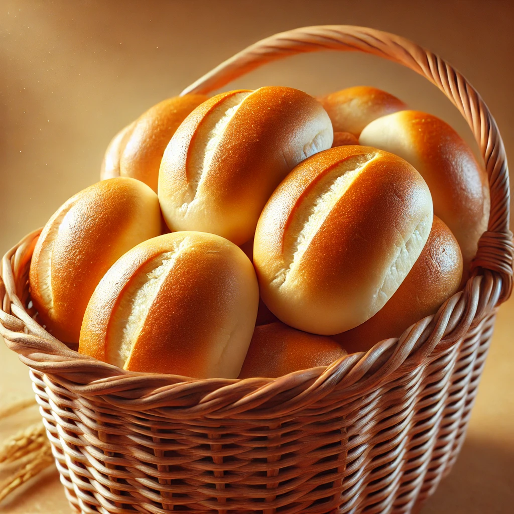
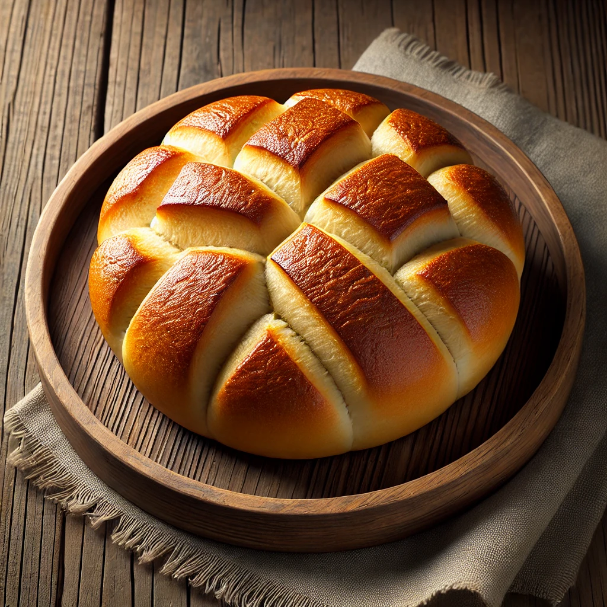
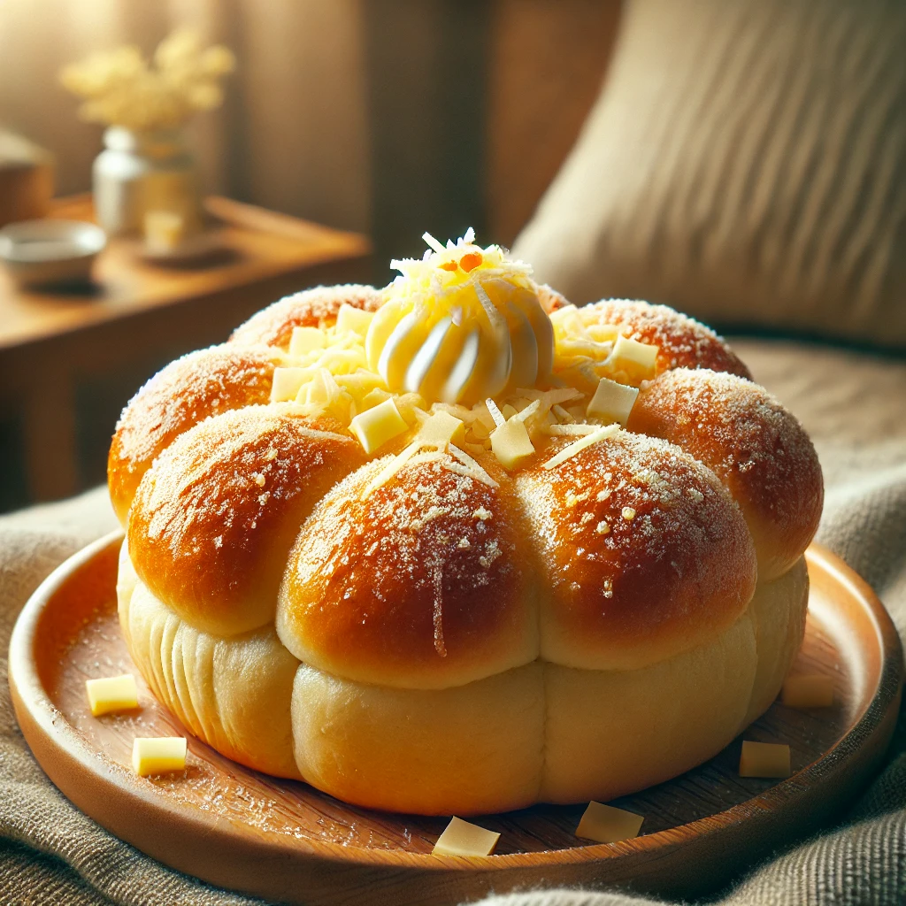

Pandesal:₱5 per piece

Spanish Bread:₱10 per piece

Monay:₱10 per piece

Ensaymada:₱30 per piece

Pan de coco:₱12 per piece

Pandesal:₱5 per piece
Spanish Bread:₱10 per piece
Monay:₱10 per piece
Ensaymada:₱30 per piece
Pan de coco:₱12 per piece
1. Pandesal
Soft and slightly sweet bread roll with a golden crust.
Best enjoyed warm with butter, coffee, or cheese.
Made with flour, yeast, sugar, salt, and milk.
2. Ensaymada
A sweet, fluffy bread topped with butter, sugar, and cheese.
Soft and airy inside, with a rich, creamy topping.
Some variations have ube or macapuno filling.
3. Spanish Bread
A soft, rolled bread filled with butter and sugar.
Slightly sweet, with a buttery caramelized flavor inside.
Often eaten as a snack or merienda.
4. Monay
Dense and slightly chewy bread, perfect for heavy snacks
Has a mildly sweet taste and golden-brown crust.
Can be eaten with butter, jam, or condensed milk.
5. Pan de Coco
A soft bread roll filled with sweet coconut filling.
Slightly sweet with a coconut aroma.
Popular as a snack or merienda.